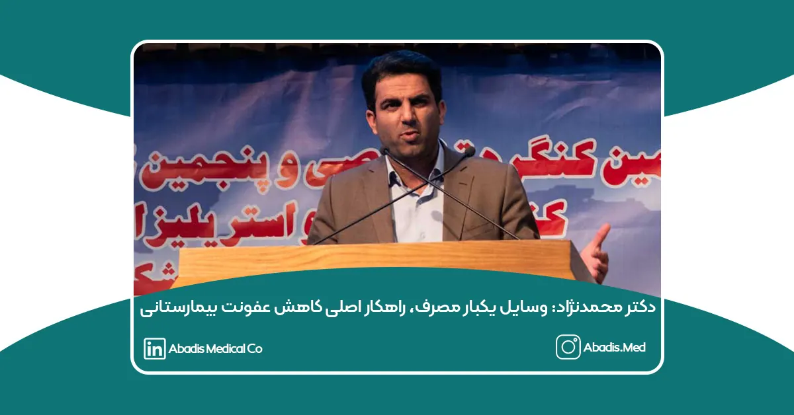

دکتر محمدنژاد، متخصص کنترل عفونت، در واکنش به مصاحبه جناب آقای دکتر رئیسی، معاون بهداشت وزیر بهداشت، نکاتی را درباره استفاده از وسایل یکبار مصرف در بیمارستانها مطرح کرد.
مشکل اصلی: کمبود منابع مالی و تجهیزات پزشکی
یکی از دلایل اصلی استفاده مکرر از تجهیزات پزشکی چند بار مصرف، کمبود منابع مالی و تأمین نشدن تجهیزات مورد نیاز بیمارستانها به دلیل تحریمها و نبود منابع مالی کافی در بیمارستانها است. اما باید به سمت استفاده گسترده از وسایل یکبار مصرف حرکت کنیم، چرا که این کار به طور قابلتوجهی میزان عفونت بیمارستانی را کاهش میدهد. چرا؟ چون وقتی وسیله استریل میشود، نیازی به کشت نمونه نیست، اما در مورد وسایلی که چندین بار استفاده میشوند، نیاز به محلول ضدعفونی، نمونهگیری و نیروی انسانی وجود دارد.
چرا وسایل یکبار مصرف نقش کلیدی در کاهش عفونت دارند؟
وقتی یک وسیله چندین بار استفاده میشود، نیازمند فرآیند استریلسازی، محلولهای ضدعفونی، نمونهگیریهای مکرر و نیروی انسانی متخصص است. در حالی که در بسیاری از مراکز درمانی با موارد زیر مواجه هستیم:
- کمبود نیروی انسانی برای استریلسازی و ضدعفونی
- عدم تامین بهموقع مواد ضدعفونیکننده
- نبود زیرساخت مناسب برای نگهداری تجهیزات (عدم تهویه مناسب و نظارت بر روند استریلسازی)
علاوه بر این، مشخص نیست که محلولهای ضدعفونی پس از انقضا چه تأثیری بر منابع آبی زیرزمینی دارند.
در مقابل، وسایل یکبار مصرف مانند آمبوبگ، باتلهای ساکشن یکبار مصرف، بیوپسیهای آندوسکوپی و تجهیزات مشابه، این چالشها را ندارند. هرچند افزایش پسماندهای عفونی ممکن است نگرانی ایجاد کند، اما در مقایسه با خطرات استفاده مجدد از وسایل، مزایای وسایل یکبار مصرف قابلتوجهتر است.
لزوم ضمانت اجرایی برای جایگزینی روشهای جدید
یکی از موانع تغییر رویکرد در بیمارستانها، مقاومت در برابر حذف روشهای سنتی و پذیرش روشهای جدید است. به همین دلیل، ضروری است که شرکتهای تأمینکننده تجهیزات پزشکی یک ضمانت اجرایی ارائه دهند تا در صورت جایگزینی یک روش جدید، بیمارستانها با کمبود تجهیزات مواجه نشوند و مجبور به بازگشت به روشهای قدیمی نشوند.
در پایان، با بیش از ۱۵ سال تجربه در کنترل عفونت بیمارستانی، معتقدم که استفاده از تجهیزات یکبار مصرف میتواند تحولی جدی در کاهش عفونتهای بیمارستانی ایجاد کند
اعتقاد دارم که حرکت به سمت استفاده گستردهتر از وسایل یکبار مصرف، گامی ضروری برای ارتقای ایمنی بیماران و بهبود شرایط کنترل عفونت در بیمارستانها است.